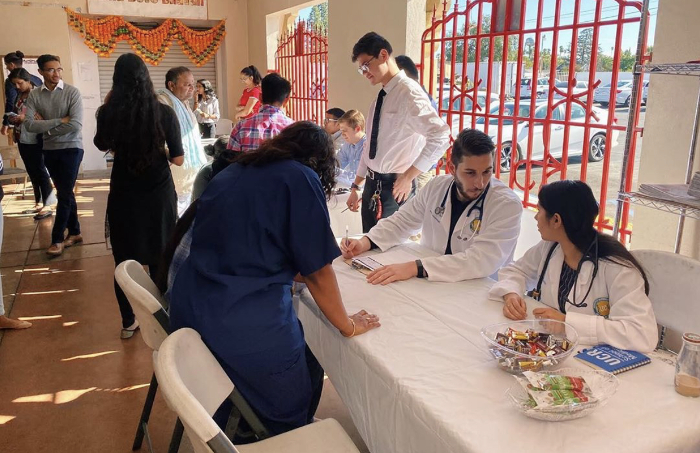

Rahul Shah
From my earliest childhood memory, I have always wanted to be an intensivist. While other children watched channels such as PBS Kids and Disney Channel, I watched Discovery Health and The Science Channel. One of my extra-curricular activities that made this concrete is the COPE program at Riverside Community Hospital. There, I have been volunteering closely with physicians in the Medical Intensive Care Unit for the past year. The majority of the patients in the unit are teetering between life and death and it is up to the physicians to prevent their demise. What gravitated me to want to treat critically ill patients is the way medicine is practiced here. I have witnessed and participated in lifesaving efforts to save a patient by infusing numerous medications, initiating chest compressions, and defibrillating the patient to simply keep them alive. I have also participated in simple interventions to bypass western medicine by having a physician show me how we can bring up a patient's blood pressure by placing a warm blanket on them. This broad spectrum of treatment from simplistic treatments to using complex combinations of medications is why in the future I would like to be an intensivist.
There have been many past positions that have allowed me to demonstrate my skills as a leader. As an Eagle Scout, I had to show leadership to a troop that consisted of 70 boys, for which I have been a part of since 2011. Here, I have been teaching boys important life skills such as first aid, knots, and communications. To achieve the rank of Eagle, I had to complete an eagle project which is a self, funded and planned project that benefits the community; I had to be a leader for the planning, execution, and completion of the project by explaining boy on where to go, noting safety hazard that was present in the worksite, and explains to people older than on where I needed their assistance. I had to be a leader by sticking to a strict schedule and ensuring that tasks were completed promptly and correctly. Because of this massive project, I won the leadership award. Another leadership position that I held was for ISA at UCR. Here I was on the fundraising committee and my main task is to raise funds for the club by running fundraisers on campus. Leadership was enacted in this position because to raise funds, I had located places that would let us fundraise, and direct volunteers on where what, and how to fundraise. Leadership pillars were used in this position because I had to be honest and trustworthy or the money, collaborate with stores to see the funds we could receive, and be professional while leading the volunteers.
From my earliest childhood memory, I have always wanted to be an intensivist. While other children watched channels such as PBS Kids and Disney Channel, I watched Discovery Health and The Science Channel. One of my extra-curricular activities that made this concrete is the COPE program at Riverside Community Hospital. There, I have been volunteering closely with physicians in the Medical Intensive Care Unit for the past year. The majority of the patients in the unit are teetering between life and death and it is up to the physicians to prevent their demise. What gravitated me to want to treat critically ill patients is the way medicine is practiced here. I have witnessed and participated in lifesaving efforts to save a patient by infusing numerous medications, initiating chest compressions, and defibrillating the patient to simply keep them alive. I have also participated in simple interventions to bypass western medicine by having a physician show me how we can bring up a patient's blood pressure by placing a warm blanket on them. This broad spectrum of treatment from simplistic treatments to using complex combinations of medications is why in the future I would like to be an intensivist.
Experience
Researcher
• Statistical Analysis of Prostate Cancer
• Increased Reliability of Gleason Score
•R coding
Cope Health Scholars-Department Coordinator
• Assisted Physcian in Medical Intensive Care Unit
• Helped Rapid Trauma Assesments
• Triaged Patients
• Cardio Pulmonary Resuscitation
Education
San Dimas High School
University of California Riverside
Portfolio
